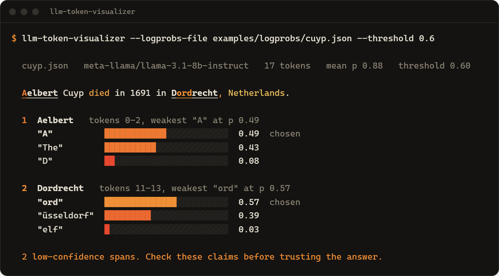
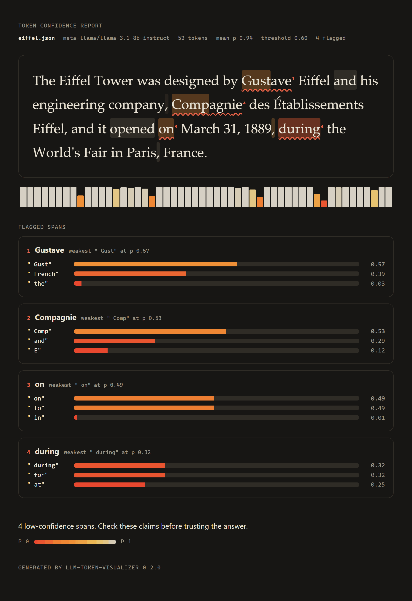

Hand it an LLM answer with token log probabilities. It flags the words where the model's confidence dropped and shows what it almost said instead. Offline on a saved response, or live against any OpenAI-compatible API.
cargo install llm-token-visualizerOr grab a prebuilt binary for Linux, macOS or Windows from the latest release.
Real responses from Llama 3.1 8B Instruct, bundled in examples/logprobs/. The detection runs in your browser with the same rules as the CLI; hover or tap any word for its probability and alternatives.
Point it at a saved Chat Completions response. The answer comes back as a heatmap, every flagged span lists the candidates at its weakest token, and --fail-on-flag turns it into a CI gate.

git clone https://github.com/Mattbusel/LLM-Hallucination-Detection-Script# offline, on a bundled real response cargo run -- --logprobs-file examples/logprobs/cuyp.json --threshold 0.6 # all four samples through the library API cargo run --example detect # live: ask a model, analyze its answer export OPENAI_API_KEY=sk-... cargo run -- --live "Who was the second person to walk on the Moon?" \ --save answer.json
Live mode works with any server that returns logprobs: set OPENAI_BASE_URL, for example to https://router.huggingface.co/v1. Anthropic's API does not return logprobs.
No second LLM, no embeddings, no network call in offline mode. Just the numbers the model already gave you, read carefully.
Low token probability is a place to look, not a fact check. This bundled answer is wrong, and the detector does not catch it.
The second person on the Moon was Buzz Aldrin. The model put at least 0.72 on every token of Pete Conrad, and Aldrin is not among the top 3 alternatives it returned at any of them.
Phrasing words. Use the flags to decide where to look first, never to certify an answer.
The same report in the shape your workflow needs. All four are produced by the CLI from the same detection.
A single self-contained page: no scripts, no external assets, light and dark. Hover any word for its alternatives.

llm-token-visualizer --logprobs-file answer.json --format html -o report.htmlPaste into a pull request, an issue, or $GITHUB_STEP_SUMMARY.
Machine-readable spans, and exit status 2 when anything is flagged, so a pipeline can route answers to review.
llm-token-visualizer --logprobs-file answer.json \ --fail-on-flag --format json -o report.json